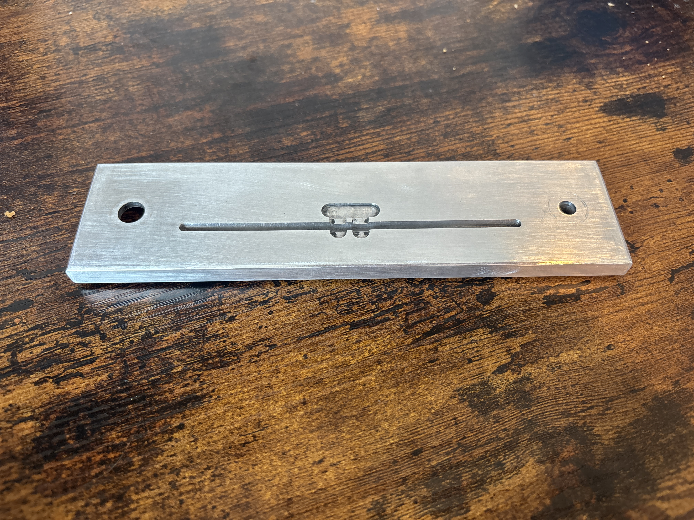
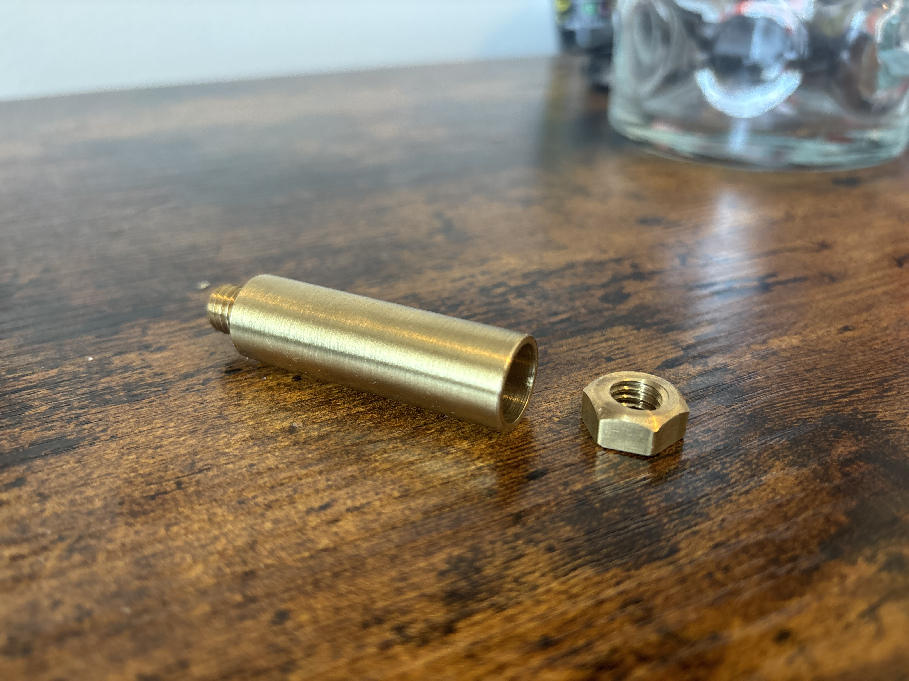
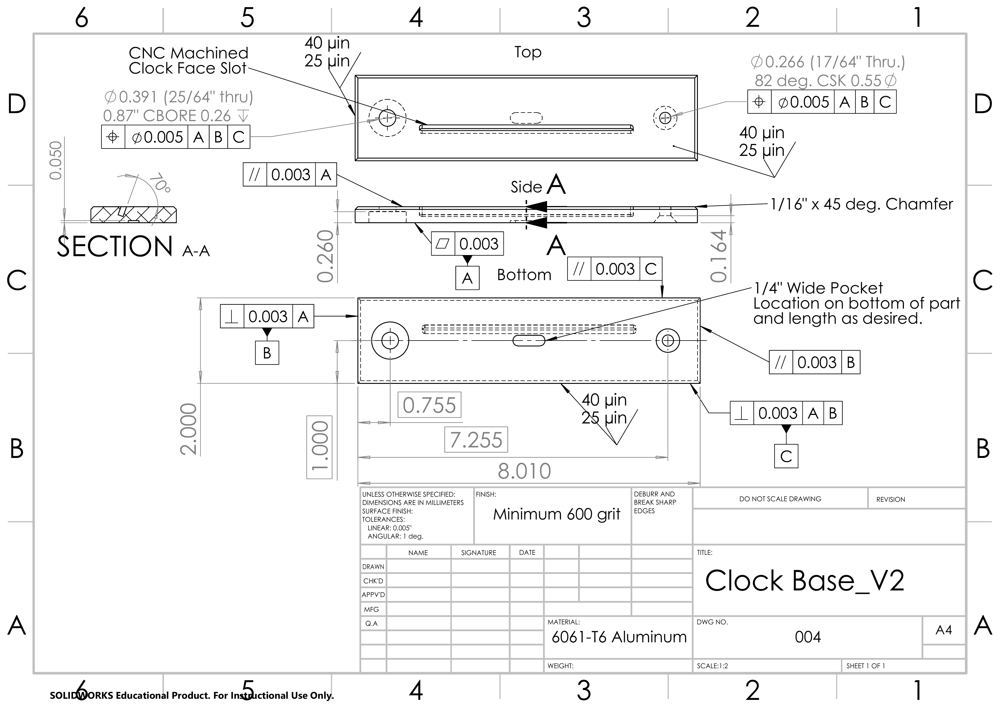
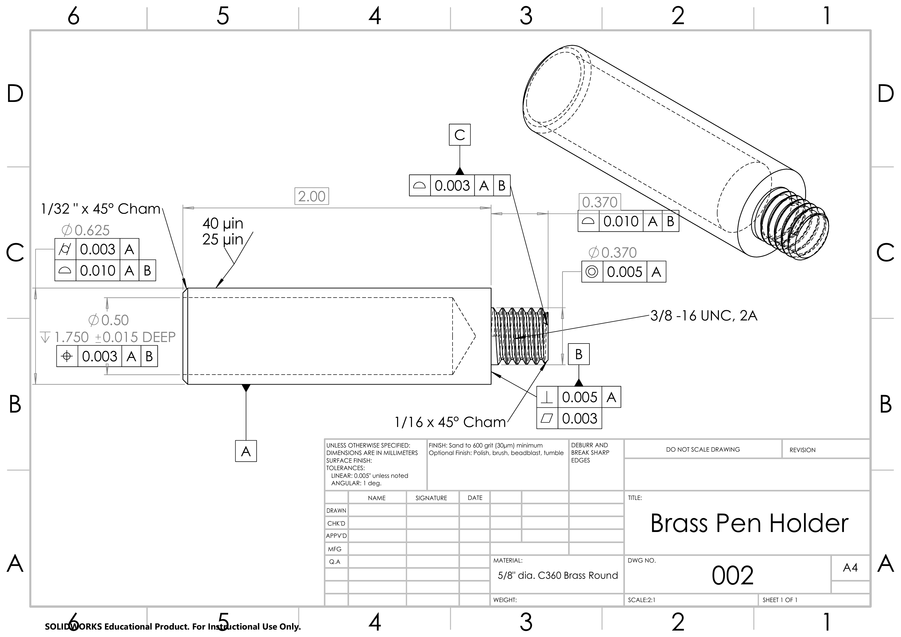
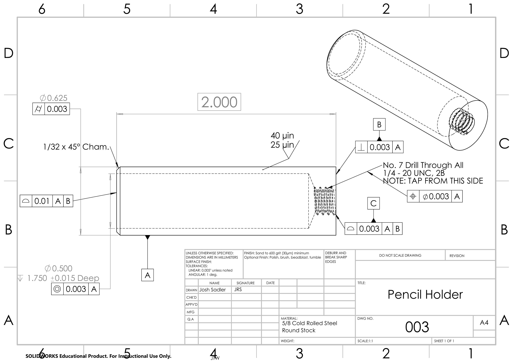

Clock Project

The Clock Project was done for my MECH 200B machining lab and Colorado State University. This project had us using, manual lathes, manual mills, laser cutters, cnc mills, and finishing steps to create a clock that had pen and pencil holders. The project gave us experience in taking engineering drawings and turning them into real world, properly toleranced parts and gave me insight into the challenges of manufacturing that is critical for accurate and realistic part creation and design.
Lessons Learned
The most challenging part of the project was machining the parts to the proper tolerance and then maintaining the tolerance through the finishing process. This was most apparent with the aluminum clock base. Being the biggest part it was quite difficult to get the part to the correct tolerance in the milling step because the all the large calipers that were necessary to measure it were inaccurate. Then after wards the 4 edges and top had to be sanded to a 600 grit finish. The first time I did this it caused be to sand my length dimension out of tolerance so I had to restart the clock base. Overall, this project taught me to take lots of measurements and take my time. By taking my time and taking each step more carefully my second attempt on the clock base was in tolerance and I even made quicker than my first. This may seem unintuitive but by being more careful and thinking hard about each step I was able to do the whole part more efficiently and effectively.



Drawings
The engineering drawings below detail each component of the clock assembly. Every part was drafted with proper dimensioning, tolerancing, and standard views to communicate manufacturing intent clearly.
Clock Base

Pen Holder

Pencil Holder

GD&T Analysis
Geometric Dimensioning and Tolerancing was applied throughout this project to ensure proper form, fit, and function of each clock component. Below is a breakdown of the GD&T applied to each part.
Clock Base
Functional Requirements
For the clock base to be successful, it must be flat on the top so that the pen and pencil can rest flat against the top, the four side edges must be square to each other, and the spacing of the holes must be correct to fit onto the CNC jig to machine the slot. This gives us three main functional requirements for the clock base.
Datum Structure
Datum A: The bottom of the clock base, with a flatness callout to ensure the part is properly flat.
Datum B: The left edge, with a callout that it is perpendicular to Datum A. This was chosen as the secondary datum because the horizontal distance between the holes is critical — this datum is used to locate the holes.
Datum C: The front edge of the clock base, with a callout that it is perpendicular to Datums A and B. This was chosen as the tertiary datum to locate the vertical position of the holes, which is less critical than their horizontal position.
Tolerancing
A parallelism feature was applied to the top face to make it parallel to Datum A within 0.003″. This tighter-than-general tolerance was chosen because the top is a mating surface and needs to be accurate.
Parallelism features were also applied to the side faces opposite Datums B and C to ensure opposite faces are parallel to each other, again within 0.003″, keeping the entire part square to itself.
For the holes, a position callout with a diametric tolerance zone of 0.005″ was used, paired with basic dimensions to locate them. The 0.005″ tolerance was chosen because that is the maximum deviation before the base no longer fits on the CNC mounting jig.
Pen Holder
Functional Requirements
For the pen holder to be successful, it must hold a pen securely and concentrically in the drilled hole, the threaded end must engage correctly with its mating part, and the drilled hole must be accurately positioned along the central axis. This gives us three main functional requirements for the pen holder.
Datum Structure
Datum A: The outer diameter of the pen holder, which establishes the central axis of the part. This was chosen as the primary datum because all features — including the drilled hole, thread, and end face — must be concentric or perpendicular to this axis.
Datum B: The end face of the pen holder, with a perpendicularity callout to Datum A. This was chosen as the secondary datum because it establishes the axial origin from which the drilled hole depth and thread start position are measured.
Datum C: The flat face at the thread start, controlled with a profile callout relative to A and B. This was chosen as the tertiary datum because it clocks the rotational orientation of the part, constraining the one remaining degree of freedom left open by A and B.
Tolerancing
A cylindricity callout of 0.003″ was applied to the outer diameter to ensure Datum A is a true, well-formed cylinder. This tight tolerance was chosen because the OD is the primary datum and any deviation directly affects how accurately all other features are located.
A profile callout of 0.010″ was applied to the Ø0.625 OD relative to Datums A and B, ensuring the outer surface maintains its true position and defining the part length through a basic dimension.
For the drilled hole, a position callout of 0.003″ relative to A and B ensures the Ø0.50 bore is concentric with the outer diameter so a pen sits centered and does not rock or bind inside the holder.
A profile callout of 0.010″ was applied to the threaded end length relative to A and B, allowing the thread end to deviate a maximum of 0.005″ on either side. A 0.005″ concentricity callout on the 0.370″ thread diameter ensures alignment with the central axis. A 0.003″ true position callout relative to A was also applied to the drilled hole to keep it properly centered, with the drill depth called out with its associated tolerance.
Pencil Holder
Functional Requirements
For the pencil holder to be successful, it must hold a pencil securely and concentrically in the drilled hole, the threaded hole must engage correctly with its mating part, and the drilled hole must be accurately positioned along the central axis. This gives us three main functional requirements for the pencil holder.
Datum Structure
Datum A: The outer diameter of the pencil holder, which establishes the central axis of the part. This was chosen as the primary datum because all features — including the drilled hole, thread, and end face — must be concentric or perpendicular to this axis.
Datum B: The end face of the pencil holder, with a perpendicularity callout to Datum A. This was chosen as the secondary datum because it establishes the axial origin from which the drilled hole depth and thread start position are measured.
Datum C: The flat face at the thread start, controlled with a profile callout relative to A and B. This was chosen as the tertiary datum because it clocks the rotational orientation of the part, constraining the one remaining degree of freedom left open by A and B.
Tolerancing
A cylindricity callout of 0.003″ was applied to the outer diameter to ensure Datum A is a true, well-formed cylinder. This tight tolerance was chosen because the OD is the primary datum and any deviation directly affects how accurately all other features are located.
A profile callout of 0.010″ was applied to the left face relative to Datums A and B, ensuring the left edge maintains its true position and defining the part length.
A concentricity callout of 0.003″ relative to A ensures the Ø0.500 drilled hole is concentric with the outer diameter, which is important so the hole stays within the OD.
A profile callout of 0.010″ was applied to the threaded end length relative to A and B, allowing the thread end to deviate a maximum of 0.005″ on either side. A 0.003″ concentricity callout on the 0.500″ drilled hole diameter ensures alignment with the central axis. For the threaded hole, a 0.003″ true position callout with a diametric tolerance zone relative to Datum A ensures the ¼-20 UNC threaded hole engages smoothly with its mating fastener without cross-threading.
Cost Estimate
The following is the cost estimate for one completed clock manufactured on manual machines.
| Category | Item / Operation | Quantity / Time | Rate / Unit Cost | Total Cost |
|---|---|---|---|---|
| Material | Aluminum 6061-T6 (Base Block) | 1 unit | $8.50 | $8.50 |
| Material | Brass Round Stock (Standoffs) | 4 inches | $1.00/inch | $4.00 |
| Material | Steel Round Stock (Pen Holder) | 4 inches | $0.75/inch | $3.00 |
| Material | Clock Mechanism & Hands | 1 unit | $5.00 | $5.00 |
| Material | Fasteners (Screws, Washers) | 1 set | $2.50 | $2.50 |
| Material | Felt Feet | 1 set | $0.50 | $0.50 |
| Subtotal | Raw Materials | $23.50 | ||
| Labor | Machinist Labor (CO Average) | 8.0 hours | $28.00/hr | $224.00 |
| GRAND TOTAL | Single Unit Production | $247.50 |
Efficiency Improvement Proposal
Manual machining processes are great for prototyping but, if we want to expand to the mass production of ten thousand units were are going to need to make efficiency improvements to cut down on cycle time and labor costs. In order to accomplish these goals I propose that we transition to CNC mills and lathes for our machines. By utilizing tool pathing and tool changes that the CNC machines unlock we eliminate the need to manually position using the Digital Read Out and doing manual tool changes. We could also utilize custom work fixturing like soft jaws in order to hold multiple clock bases in order to reduce our "spindle idle time". By utilizing CNC machining and other tricks to increase efficiency we can make parts for cheaper, with tighter tolerances, faster than ever before.
Mass Production Analysis (10,000 Units)
To scale up production of the clock to 10,000 units we need to take advantage of economies of scale in material purchasing and the huge reduction in cycle times that come with automated CNC processes. For this estimate I'm leaving out labor costs to focus purely on material scaling and machine time overhead as requested by the project constraints.
By ordering the raw aluminum, brass, and steel in bulk we can assume a 20% reduction in raw material costs from the single unit prototype phase. This bulk discount brings the raw material cost down to $18.40 per unit which totals $184,000 for the entire production run. On top of that we need to factor in about $0.50 per unit for CNC tooling and consumables which adds $5,000 to the budget. That brings the total mass production cost for 10,000 units to $189,000 excluding labor.
The manufacturing time comparison between manual and automated is where things get really interesting. The manual mill and gear head lathe required about 5 hours of machining time per unit. If we tried to scale that manually for 10,000 units we'd need over 50,000 hours of continuous work. By switching to an automated CNC process we can cut the cycle time down to about 15 minutes per unit. Producing 10,000 units at that speed would only take 2,500 hours of machine time which condenses the timeline to roughly 62.5 standard work weeks. That completely eliminates the production bottleneck.
Trying to mass produce 10,000 units using the manual processes we started with is just not viable. The transition to CNC automation is absolutely necessary for commercial scaling. It compresses what would be a prohibitively long manual project into a realistic timeline while also lowering per unit material costs through bulk purchasing.